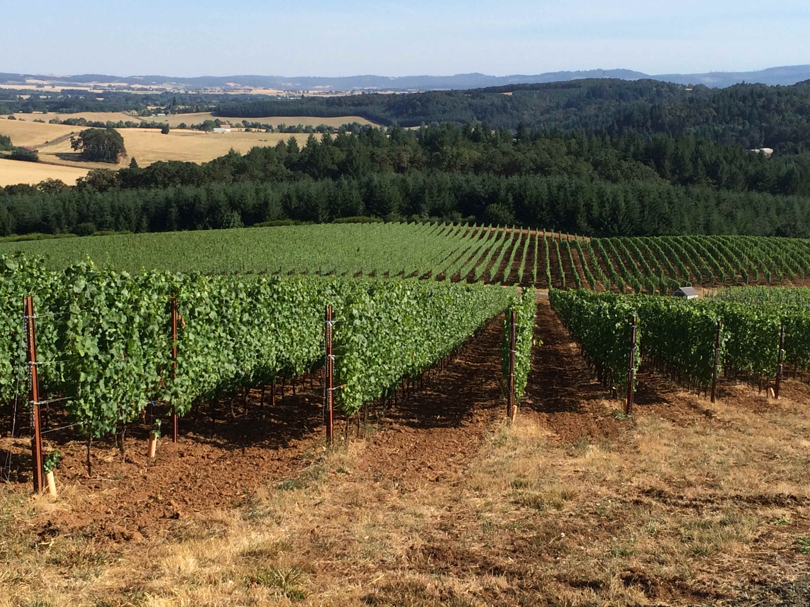

Aged to Perfection
barrel ageing relies on the smell and taste of the fruit and the ensuing wine throughout the process from vine to bottle
barrel ageing relies on the smell and taste of the fruit and the ensuing wine throughout the process from vine to bottle
This year’s five-barrel blend is comprised of two vineyards; our own Buttonfield and the neighboring Trout Lily Ranch vineyard making this wine a 100% Chehalem Mountain AVA wine.
This wine is a blend of four vineyards; our own Buttonfield and Trout Lily Ranch in the Chehalem Mountain AVA, Terrarossa Vineyard in the Dundee Hills AVA and Hannah’s Vineyard in the Tualatin Valley.
100% grown on our home vineyard, Buttonfield Estate and planted in 1989, these Pinot Gris vines are the “Old Clone Gris” selection that was planted on an east facing, 1.3 acre Stonyland outcropping.
Mad Violets is a small label owned by Stirling Fox. His wife, Kelly Kidneigh is consulting winemaker and his daughters, Madeline and Violet, are the inspiration for the label. The family dog, Tenzing, is a beautiful Tibetan mastiff that protects Buttonfield Vineyard, the family estate which is where most of the fruit is sourced for the wine.
We are open for private tastings and tours of the vineyard throughout the year – You may set up an appointment by clicking here –
Mad Violets Tiny Taster is located one hour southwest of Portland, Oregon. Head south on I-5 and take exit 289 toward Tualatin/Sherwood. Turn right onto SW Nyberg St. and continue straight to stay on SW Nyberg St for 98 ft. Keep left to continue on SW Tualatin-Sherwood Rd for 4.5 mi. Next you will turn left onto OR-99W S/Pacific Hwy W. After 3 mi. turn right onto Bell Rd. Turn left onto SW Bell Rd. Continue straight onto NE North Valley Rd for 2.6 mi and then turn right onto NE Hillside Dr. Our driveway is to your left. 17429 Northeast Hillside Drive, Newberg, OR 97132